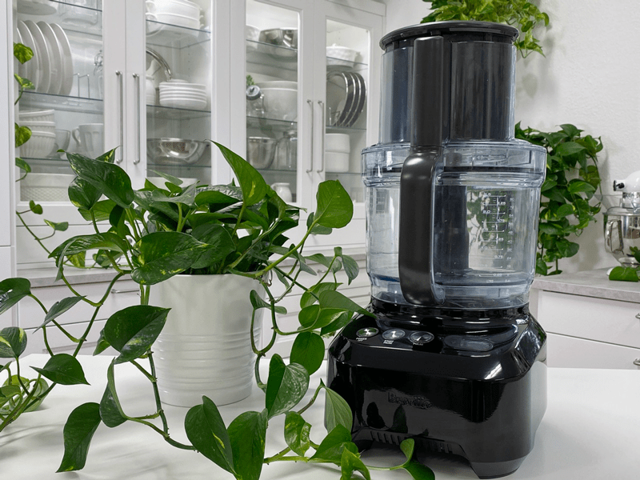

#1 – Food Processor – Why and What I Recommend
I know what you’re thinking…do I need a food processor when I already own a high-powered blender? While there is some overlap between what a food processor and a blender can do depending on what models you have, they both serve different purposes. A blender is typically meant for blending recipes that contain a significant amount of liquid. A food processor is meant for chopping, slicing, and grating solid items. You can’t replace a food processor with a basic blender.

Since food processors chop, slice, grind, and purée a wide variety of foods, they can handle chunkier, thicker batters such as raw cookie dough, pizza dough, raw pie crusts, and quick veggie chopping… If you try to create these batters in a blender, you risk burning up the motor since the foods are too thick to spin around.
Let me save you from that heartache. You can start off with whatever food processor you have right now… but in time look to purchase a higher-end model.
Look for High Wattage
Food processors come with different motor watts. Anymore, I tend to look for the higher wattage machines (mine is 1200 watts). Why limit myself or the abilities of the unit? Better to have more than not enough. Ask the few lower-end models that I have burnt up throughout the years.
Look at the Bowl Size
The best size for your food processor’s bowl or jar depends entirely on how large your family is or how many people you usually cook for. In general, it’s best to choose a bowl that holds at least nine cups. Make sure the bowl indicates a maximum liquid line. This will keep you from adding too much liquid to the machine and causing leaks.
Look for a Large Chute
A food processor has a chute that allows you to add food to the bowl while the appliance is running. Choose a model with a wide food chute. You can put large chunks of vegetables and other foods through a wide chute, and you won’t have to cut your ingredients beforehand. Why spend the time precutting up food to go into a machine that is supposed to be doing this for you?
Speed
Most food processors have three settings: on, off, and pulse. The pulse setting allows you to turn on the machine for brief periods, so you don’t over chop, purée, or grind your ingredients. However, some food processors have additional speed settings to accommodate heavy-duty tasks. If you plan to use your appliance for more than chopping, puréeing, and grating, look for a model with extra speeds.
Controls
Food processors either have levers, buttons, or digital touchpads for controls. Levers and buttons are easy to use, though they can be difficult to clean if spills occur. A touchpad is just as user-friendly, and it’s extremely easy to wipe clean after use. For this reason, it may be worth the extra investment.
What I use in the Kitchen
I own the
Breville BFP800XL Sous Chef Food Processor. It comes with two bowls: a small bowl with a capacity of 2.5 cups and a large bowl with a capacity of 16 cups. To help reduce my time in the kitchen (especially around meal prep time), I like to make large batches of raw crackers, breads, cookies, bars, desserts, cereals, granolas, and so forth. So having a food processor that can hold a large amount is ideal for me. All of the foods I mentioned can be made ahead of time, frozen in single servings. In order to lead a healthy lifestyle, being prepared is key.
The small bowl attachment is handy for making smaller batches of salsa, guacamole dip, dressings, mincing herbs, chopping nuts, or blending a sauce. It also comes with a count up/down LCD timer. I use this a lot when attempting to duplicate recipes over and over with the same outcome. Along with the food processor itself, it comes with a storage box that contains: micro-serrated disc, julienne disc, french fry cutting disc, whisking disk, mini blade, dough blade, cleaning brush, and a plastic spatula.
Nouveauraw.com is a participant in the Amazon Services LLC Associates Program, an affiliate advertising program designed to provide a means for us to earn fees by linking to Amazon.com and affiliated sites – at no extra cost to you.
Thank you for your support! amie sue
© AmieSue.com